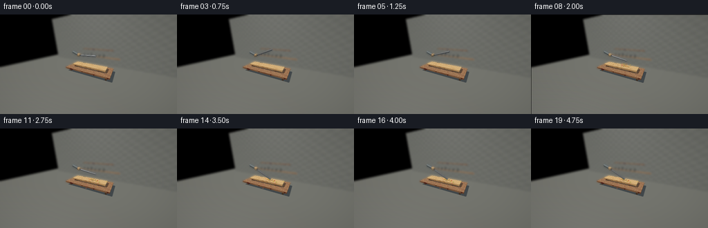
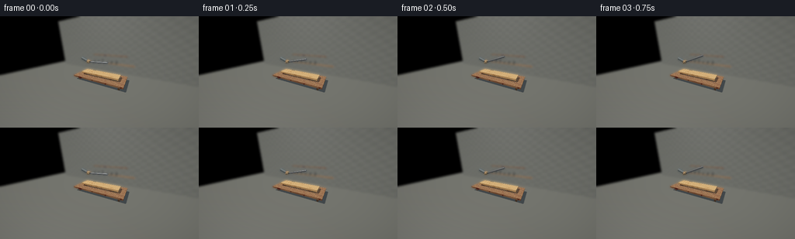
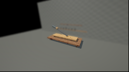
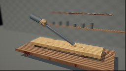

CODING AGENTS AS PIXEL WORLD MODELS
traex/GPT-6.1-Sol · material_0015
点击播放 · 原生 RGB 像素
逐轮保存的候选
回放视频、检查图与代码变化。
每份候选均可单独播放。实际图片检查记录在下方工具轨迹中。
候选 01播放与检查图
点击播放 · 原生 RGB 像素

展开代码变化
--- 上一保存版本
+++ 本次保存版本
@@ -0,0 +1,300 @@
+import json, math
+from pathlib import Path
+import numpy as np
+from PIL import Image, ImageDraw, ImageFilter
+import artifact_io
+
+ROOT=Path(__file__).resolve().parent
+SPEC=json.loads((ROOT/'task_spec.json').read_text())
+W,H=SPEC['width'],SPEC['height']; SS=2
+rng=np.random.default_rng(27)
+
+def unit(v):
+ v=np.asarray(v,dtype=np.float32)
+ return v/np.maximum(np.linalg.norm(v,axis=-1,keepdims=True),1e-9)
+
+def box(lo,hi,mat,**kw): return dict(kind='box',lo=np.array(lo),hi=np.array(hi),mat=mat,**kw)
+def cyl(a,b,r,mat,**kw):
+ a=np.array(a); b=np.array(b); length=np.linalg.norm(b-a)
+ return dict(kind='cyl',a=a,b=b,u=(b-a)/length,length=length,r=r,mat=mat,**kw)
+def ell(c,r,mat,**kw): return dict(kind='ell',c=np.array(c),r=np.array(r),mat=mat,**kw)
+
+# Every visible surface is rendered by analytic ray intersections, not a rendering engine.
+def intersect(o,ro,rd):
+ if o['kind']=='box':
+ inv=1/np.where(np.abs(rd)>1e-9,rd,1e-9)
+ a=(o['lo']-ro)*inv; b=(o['hi']-ro)*inv
+ near=np.max(np.minimum(a,b),axis=-1); far=np.min(np.maximum(a,b),axis=-1)
+ t=np.where(near>1e-4,near,far)
+ return np.where((far>=near)&(t>1e-4),t,np.inf)
+ if o['kind']=='ell':
+ v=(ro-o['c'])/o['r']; d=rd/o['r']
+ a=np.sum(d*d,axis=-1); b=np.sum(v*d,axis=-1); c=np.sum(v*v,axis=-1)-1
+ det=b*b-a*c; root=np.sqrt(np.maximum(det,0))
+ t=(-b-root)/a; t=np.where(t>1e-4,t,(-b+root)/a)
+ return np.where((det>=0)&(t>1e-4),t,np.inf)
+ u=o['u']; oc=ro-o['a']; du=np.sum(rd*u,axis=-1); ou=np.sum(oc*u,axis=-1)
+ dv=rd-du[...,None]*u; ov=oc-ou[...,None]*u
+ a=np.sum(dv*dv,axis=-1); b=np.sum(dv*ov,axis=-1); c=np.sum(ov*ov,axis=-1)-o['r']**2
+ det=b*b-a*c; rt=np.sqrt(np.maximum(det,0)); aa=np.maximum(a,1e-12)
+ t0=(-b-rt)/aa; t1=(-b+rt)/aa
+ y0=ou+t0*du; y1=ou+t1*du
+ t=np.minimum(np.where((det>=0)&(t0>1e-4)&(y0>=0)&(y0<=o['length']),t0,np.inf),np.where((det>=0)&(t1>1e-4)&(y1>=0)&(y1<=o['length']),t1,np.inf))
+ for y in (0,o['length']):
+ tt=(y-ou)/np.where(np.abs(du)>1e-9,du,1e-9)
+ q=ov+tt[...,None]*dv
+ t=np.minimum(t,np.where((tt>1e-4)&(np.sum(q*q,axis=-1)<=o['r']**2),tt,np.inf))
+ return t
+
+def normal(o,p):
+ if o['kind']=='box':
+ dist=np.concatenate((np.abs(p-o['lo']),np.abs(p-o['hi'])),axis=-1)
+ j=np.argmin(dist,axis=-1); n=np.zeros_like(p)
+ n[np.arange(len(p)),j%3]=np.where(j<3,-1,1)
+ return n
+ if o['kind']=='ell': return unit((p-o['c'])/(o['r']**2))
+ q=p-o['a']; y=q@o['u']; n=unit(q-y[:,None]*o['u'])
+ n[y<1e-4]=-o['u']; n[y>o['length']-1e-4]=o['u']
+ return n
+
+CAM=np.array([4.0,-7.7,4.4],dtype=np.float32)
+LOOK=np.array([-.1,0,.99],dtype=np.float32)
+F=unit(LOOK-CAM); R=unit(np.cross(F,[0,0,1])); U=unit(np.cross(R,F))
+FOCAL=1.25
+xx,yy=np.meshgrid((np.arange(W*SS)+.5)/(W*SS)*2-1,1-(np.arange(H*SS)+.5)/(H*SS)*2)
+RAYS=unit(F+xx[...,None]*(W/H)/FOCAL*R+yy[...,None]/FOCAL*U).reshape(-1,3)
+LIGHT=unit(np.array([-3.8,-4.3,7.5])); FILL=unit(np.array([3.2,1.5,3.6]))
+
+def noise(p):
+ return (np.sin(p[:,0]*111.1+p[:,1]*177.7+p[:,2]*97.1)*np.sin(p[:,0]*61.7-p[:,1]*214.3+p[:,2]*72.5))
+
+def surface(o,p,n,damage):
+ mat=o['mat']; count=len(p); rough=np.full(count,.8); metallic=np.zeros(count)
+ x,y,z=p.T
+ grain=np.zeros(count)
+ if mat in ('wood','table','support'):
+ light=mat=='wood'
+ # Irregular longitudinal earlywood/latewood, including elliptical knots.
+ gy=y.copy()
+ for kx,ky,sz in ((-1.32,-.15,.10),(.15,.48,.085),(1.66,-.38,.095)):
+ dx=(x-kx)*.27; dy=y-ky
+ influence=np.exp(-((x-kx)**2*.45+(dy)**2*10))
+ gy+=.050*np.sin(np.arctan2(dy,dx)*2)*influence
+ phase=gy*155+2.5*np.sin(x*1.7+y*6)+.7*np.sin(x*6+y*10)
+ lines=(.5+.5*np.sin(phase))**12
+ grain=.10*np.sin(gy*32+.45*np.sin(x*2))-.11*lines+.022*noise(p)
+ col=np.tile(np.array([.63,.365,.155]) if light else np.array([.27,.145,.073]),(count,1))
+ col+=grain[:,None]*np.array([1,.75,.4])
+ for kx,ky,sz in ((-1.32,-.15,.10),(.15,.48,.085),(1.66,-.38,.095)):
+ rad=np.sqrt(((x-kx)*.25)**2+(y-ky)**2)
+ knot=np.exp(-rad**2/(sz*sz))
+ col-=knot[:,None]*(.14+.10*np.sin(rad*190)[:,None])*np.array([1,.8,.45])
+ # The end grain and sawn edges are darker, with tiny torn fibres.
+ side=np.abs(n[:,2])<.6
+ col[side]*=.79
+ end=np.abs(n[:,0])>.8
+ endgrain=np.sin(np.sqrt((y+.7)**2+(z-.75)**2)*180)
+ col[end]*=(.94+.09*endgrain[end,None])
+ rough[:]=.86
+ if mat=='wood' and damage>0:
+ # Chips and a jagged longitudinal split produced by the actual impact.
+ top=n[:,2]>.8
+ strike_x=.69
+ dent=np.exp(-((x-strike_x)/.21)**2-((y)/.14)**2)
+ col-=dent[:,None]*damage*np.array([.24,.18,.10])
+ path=.022*np.sin(x*38)+.008*np.sin(x*101)+.015*(x-strike_x)
+ long=np.maximum(0,1-np.abs(x-strike_x)/(1.20*damage))
+ crack=(np.abs(y-path)<(.003+long*.013)*damage)&(x>strike_x-.9*damage)&(x<strike_x+1.22*damage)&top
+ col[crack]=[.075,.032,.012]
+ fiss=(np.abs(y-(.025+.25*(x-strike_x)+.006*np.sin(x*75)))<.006)&(x>strike_x)&(x<strike_x+.34*damage)&top
+ col[fiss]=[.17,.075,.02]
+ torn=(dent>.2)&(noise(p*1.6)>.51)&top
+ col[torn]=[.76,.51,.26]
+ elif mat=='iron':
+ local=(p-o['a'])@o['u']
+ pattern=np.sin(local*28+np.sin(y*59)*.6)
+ pits=noise(p*1.5)
+ col=np.tile([.135,.151,.164],(count,1))
+ col+=(.012*pattern+.019*pits)[:,None]
+ rust=np.maximum(0,np.sin(x*7+y*18+z*5)*np.sin(x*16-y*21+z*10)-.52)
+ col+=rust[:,None]*np.array([.16,.05,-.018])
+ rough[:]=.28; metallic[:]=.85
+ ends=np.abs(n@o['u'])>.9
+ col[ends]=[.26,.28,.29]; rough[ends]=.43
+ elif mat=='glove':
+ col=np.tile([.36,.235,.116],(count,1))
+ col+=(noise(p*1.9)*.024)[:,None]
+ col-=np.maximum(0,np.sin(x*29+z*40)*np.sin(y*41+z*18)-.55)[:,None]*.06
+ rough[:]=.9
+ elif mat=='seam': col=np.tile([.17,.106,.058],(count,1))
+ elif mat=='sleeve':
+ woven=(np.sin(x*450)*np.sin(y*450+z*160))*.012
+ col=np.tile([.074,.098,.11],(count,1))+woven[:,None]; rough[:]=.95
+ elif mat=='wall':
+ col=np.tile([.16,.18,.18],(count,1))+(np.sin(x*5)*np.sin(z*7)*.013+noise(p)*.007)[:,None]
+ else: col=np.tile([.11,.12,.115],(count,1))
+ return np.clip(col,.008,1),rough,metallic
+
+PIVOT=np.array([-1.65,.02,2.2]); LENGTH=2.70; RAD=.112
+CONTACT=math.asin((.855+RAD-2.2)/LENGTH)
+
+def rod_angle(t):
+ if t<.75: return math.radians(3+19*np.sin(t/.75*math.pi/2))
+ if t<1.0: return math.radians(22)
+ if t<1.75:
+ a=(t-1.0)/.75
+ return math.radians(22)+(CONTACT-math.radians(22))*a*a
+ if t<2.25:
+ return CONTACT+math.radians(24)*np.sin((t-1.75)/.50*math.pi/2)
+ if t<3.25:
+ a=(t-2.25)/1.0
+ return CONTACT+math.radians(24)*(1-a*a)
+ return CONTACT+math.radians(1.7)*np.exp(-(t-3.25)*2.5)*np.sin((t-3.25)*12)
+
+def scene(t):
+ a=rod_angle(t); d=np.array([math.cos(a),0,math.sin(a)])
+ pivot=PIVOT.copy()
+ tip=pivot+d*LENGTH
+ objects=[
+ box([-15,-15,-.28],[15,15,-.20],'other'),
+ box([-12,3.8,-.2],[12,4,9],'wall'),
+ box([-3.4,-1.45,.24],[3.35,1.45,.43],'table'),
+ box([-2.35,-.48,.44],[-1.8,.48,.65],'support'),
+ box([1.85,-.48,.44],[2.4,.48,.65],'support'),
+ box([-2.62,-.65,.65],[2.62,.65,.855],'wood'),
+ ]
+ # Bench plank joints and softened workshop silhouettes.
+ for y in [-.73,.75]:
+ objects.append(box([-3.4,y,.4301],[3.35,y+.015,.435],'other'))
+ for x in [-2.85,2.75]: objects.append(box([x,-1.15,-.2],[x+.2,1.1,.24],'table'))
+ objects += [box([-4,3.4,1.3],[4,3.75,1.39],'table'),box([-3.1,3.3,2.7],[2.8,3.6,2.78],'table')]
+ for i in range(6):
+ x=-3+i*.83
+ objects.append(cyl([x,3.52,1.4],[x,3.52,1.73+.1*(i%3)],.17,'other'))
+ # Straight solid iron bar, with a modest bevel at the end and exposed flat steel face.
+ objects.append(cyl(pivot-d*.34,tip-d*.018,RAD,'iron'))
+ objects.append(cyl(tip-d*.018,tip,.102,'iron'))
+ # A leather work glove firmly grips the rear of the rod; sleeve exits frame left.
+ hand=pivot-d*.18+np.array([0,.065,.05])
+ objects.append(cyl(hand+np.array([-1.20,.11,.36]),hand+np.array([-.24,.04,.045]),.215,'sleeve'))
+ objects.append(cyl(hand+np.array([-.30,.04,.07]),hand+np.array([-.13,.025,.025]),.205,'seam'))
+ objects.append(ell(hand,[.30,.19,.22],'glove'))
+ for j in range(4):
+ fc=pivot+d*(-.31+j*.11)+np.array([0,-.070,-.035])
+ objects.append(ell(fc,[.078,.17,.13],'glove'))
+ # Slightly raised transverse finger seams.
+ objects.append(ell(fc+np.array([-.051,-.002,.008]),[.009,.167,.12],'seam'))
+ objects.append(ell(pivot+np.array([.035,-.08,.15]),[.19,.115,.087],'glove'))
+ return objects,tip
+
+def render(t):
+ objs,tip=scene(t); rays=RAYS; N=len(rays)
+ nearest=np.full(N,np.inf); ids=np.full(N,-1,dtype=np.int16)
+ for j,o in enumerate(objs):
+ tt=intersect(o,CAM,rays); m=tt<nearest; nearest[m]=tt[m]; ids[m]=j
+ p=CAM+rays*nearest[:,None]
+ n=np.zeros_like(p); albedo=np.zeros_like(p); rough=np.ones(N); metal=np.zeros(N)
+ damage=0 if t<1.75 else 1
+ for j,o in enumerate(objs):
+ mask=ids==j
+ if not np.any(mask): continue
+ nn=normal(o,p[mask]); n[mask]=nn
+ c,r,m=surface(o,p[mask],nn,damage); albedo[mask]=c; rough[mask]=r; metal[mask]=m
+ # A broad area lamp approximation: smooth penumbrae from two nearby directions.
+ visibility=np.zeros(N,dtype=np.float32)
+ for light in [LIGHT,unit(LIGHT+np.array([.055,.035,0]))]:
+ origin=p+n*.0015
+ shade=np.ones(N,dtype=np.float32)
+ # Exclude background furniture and thin decorative seams from costly shadow passes.
+ for j in list(range(2,6))+list(range(len(objs)-13,len(objs))):
+ if j<0: continue
+ tt=intersect(objs[j],origin,light)
+ shade[tt<30]=0
+ visibility+=shade*.5
+ nl=np.maximum(0,n@LIGHT); nf=np.maximum(0,n@FILL)
+ ambient=.25+.095*np.maximum(n[:,2],0)
+ diff=ambient[:,None]*np.array([.83,.92,1.0])+nl[:,None]*visibility[:,None]*np.array([1.35,1.15,.91])+nf[:,None]*np.array([.14,.17,.21])
+ color=albedo*diff*(1-metal[:,None]*.58)
+ view=-rays; hv=unit(view+LIGHT)
+ nh=np.maximum(0,np.sum(n*hv,axis=-1)); nv=np.maximum(0,np.sum(n*view,axis=-1))
+ power=12+90*(1-rough)**2
+ spec=nh**power
+ f0=.035*(1-metal[:,None])+albedo*metal[:,None]*1.5
+ color+=f0*spec[:,None]*visibility[:,None]*2.5
+ # Cold studio reflection along the cylindrical iron highlights its weight and roundness.
+ refl=2*np.sum(n*view,axis=-1)[:,None]*n-view
+ env=.10+.26*np.exp(-((refl[:,2]-.62)/.19)**2)+.48*np.exp(-((refl[:,0]+.4)/.11)**2)*np.maximum(refl[:,2],0)
+ color+=metal[:,None]*env[:,None]*np.array([.35,.41,.47])*(.4+.6*(1-nv)**3)[:,None]
+ # Soft photographic tone map with a warm workshop key and gentle edge vignette.
+ color=1-np.exp(-color*1.25)
+ color=np.clip(color,0,1)**(1/2.2)
+ img=(color.reshape(H*SS,W*SS,3)*255).astype(np.uint8)
+ im=Image.fromarray(img)
+ # Deep background is out of focus, while the board, hand and iron stay sharp.
+ bg=im.filter(ImageFilter.GaussianBlur(2.7))
+ mask=Image.fromarray(((nearest.reshape(H*SS,W*SS)>11)*255).astype('uint8')).filter(ImageFilter.GaussianBlur(1))
+ im=Image.composite(bg,im,mask)
+ return im,nearest.reshape(H*SS,W*SS),tip
+
+# Splinters and sawdust use true world-space trajectories, projected with depth tests.
+PART=[]
+for i in range(43):
+ PART.append(dict(pos=np.array([.69+rng.normal(0,.06),rng.normal(0,.06),.877]),vel=np.array([rng.normal(.3,1.1),rng.normal(-.45,.85),rng.uniform(.7,2.5)]),length=rng.uniform(.025,.16),width=rng.uniform(.008,.024),rot=rng.uniform(0,6.28),spin=rng.uniform(-9,9),color=tuple(rng.integers([150,92,42],[219,165,98]))))
+
+def project(p):
+ q=np.asarray(p)-CAM; depth=q@F
+ return np.stack(((q@R)/depth*FOCAL/(W/H)*.5*W*SS+.5*W*SS,.5*H*SS-(q@U)/depth*FOCAL*.5*H*SS),axis=-1),depth
+
+def particles(im,depth,t):
+ if t<1.75: return im
+ dt=t-1.75; dr=ImageDraw.Draw(im)
+ for part in PART:
+ v=part['vel']; p=part['pos']+v*dt+np.array([0,0,-3.5*dt*dt])
+ # Ballistic flight followed by rest on board or bench; fragments remain after the blow.
+ if p[2]<.87:
+ landt=(v[2]+math.sqrt(v[2]**2+14*(part['pos'][2]-.87)))/7
+ p=part['pos']+v*landt+np.array([0,0,-3.5*landt*landt])
+ p[2]=.87 if abs(p[0])<2.62 and abs(p[1])<.65 else .446
+ theta=part['rot']+part['spin']*min(dt,.48)
+ u=np.array([math.cos(theta),math.sin(theta),.25*math.sin(theta)])*part['length']
+ v2=np.array([-math.sin(theta),math.cos(theta),0])*part['width']
+ points=np.array([p-u/2-v2/2,p+u/2-v2/3,p+u/3+v2/2])
+ xy,z=project(points); mid,zmid=project(p)
+ ix,iy=int(mid[0]),int(mid[1])
+ if 0<=ix<W*SS and 0<=iy<H*SS and zmid < depth[iy,ix]+.18:
+ dr.polygon([tuple(q) for q in xy],fill=part['color'])
+ # A small, warm burst of fine sawdust dissipates instead of behaving like smoke.
+ if dt<.85:
+ overlay=Image.new('RGBA',im.size,(0,0,0,0)); od=ImageDraw.Draw(overlay)
+ localrng=np.random.default_rng(142)
+ for i in range(75):
+ vel=np.array([localrng.normal(.2,1),localrng.normal(-.5,.7),localrng.uniform(.15,1.2)])
+ p=np.array([.69,0,.91])+vel*dt+np.array([0,0,-1.4*dt*dt])
+ if p[2]<.855: continue
+ q,z=project(p); rad=(1+dt*1.6)*SS*localrng.uniform(.3,1.0)
+ alpha=int(55*(1-dt/.85))
+ od.ellipse([q[0]-rad,q[1]-rad,q[0]+rad,q[1]+rad],fill=(207,168,111,alpha))
+ overlay=overlay.filter(ImageFilter.GaussianBlur(.8*SS))
+ im=Image.alpha_composite(im.convert('RGBA'),overlay).convert('RGB')
+ return im
+
+def main():
+ frames=[]
+ for i in range(SPEC['frames']):
+ t=i/SPEC['fps']
+ im,depth,tip=render(t)
+ im=particles(im,depth,t)
+ # Tiny impact camera shock, settling within two frames.
+ if i in [7,8]:
+ dx,dy=((1.2,1.2) if i==7 else (-.4,-.4))
+ im=im.transform(im.size,Image.Transform.AFFINE,(1,0,dx*SS,0,1,dy*SS),resample=Image.Resampling.BICUBIC)
+ im=im.resize((W,H),Image.Resampling.LANCZOS)
+ arr=np.asarray(im).astype(np.float32)
+ gy,gx=np.mgrid[0:H,0:W]
+ vignette=1-.13*((gx-W/2)**2/(W*.7)**2+(gy-H/2)**2/(H*.8)**2)
+ arr*=vignette[...,None]
+ frames.append(np.clip(arr,0,255).astype(np.uint8))
+ print(f'frame {i+1}/{SPEC["frames"]}',flush=True)
+ artifact_io.save(np.stack(frames),ROOT)
+
+if __name__=='__main__': main()
候选 02播放与检查图
点击播放 · 原生 RGB 像素

展开代码变化
--- 上一保存版本
+++ 本次保存版本
@@ -57,10 +57,10 @@
n[y<1e-4]=-o['u']; n[y>o['length']-1e-4]=o['u']
return n
-CAM=np.array([4.0,-7.7,4.4],dtype=np.float32)
-LOOK=np.array([-.1,0,.99],dtype=np.float32)
+CAM=np.array([3.1,-6.6,3.8],dtype=np.float32)
+LOOK=np.array([-.15,0,1.55],dtype=np.float32)
F=unit(LOOK-CAM); R=unit(np.cross(F,[0,0,1])); U=unit(np.cross(R,F))
-FOCAL=1.25
+FOCAL=3.05
xx,yy=np.meshgrid((np.arange(W*SS)+.5)/(W*SS)*2-1,1-(np.arange(H*SS)+.5)/(H*SS)*2)
RAYS=unit(F+xx[...,None]*(W/H)/FOCAL*R+yy[...,None]/FOCAL*U).reshape(-1,3)
LIGHT=unit(np.array([-3.8,-4.3,7.5])); FILL=unit(np.array([3.2,1.5,3.6]))
@@ -192,7 +192,7 @@
nearest=np.full(N,np.inf); ids=np.full(N,-1,dtype=np.int16)
for j,o in enumerate(objs):
tt=intersect(o,CAM,rays); m=tt<nearest; nearest[m]=tt[m]; ids[m]=j
- p=CAM+rays*nearest[:,None]
+ p=CAM+rays*np.minimum(nearest,50)[:,None]
n=np.zeros_like(p); albedo=np.zeros_like(p); rough=np.ones(N); metal=np.zeros(N)
damage=0 if t<1.75 else 1
for j,o in enumerate(objs):
候选 03播放与检查图
可观测工具轨迹
实际执行的命令与返回图片。
命令 1exit 0
/bin/bash -lc 'ls -la && cat prompt.txt && cat GENERATION_RULES.md && cat task_spec.json'
命令 2exit 0
/bin/bash -lc "cat artifact_io.py && python - <<'PY'
import numpy,PIL
print('available')
PY"命令 3exit 0
/bin/bash -lc "cat > generate.py <<'PY'
import json, math
from pathlib import Path
import numpy as np
from PIL import Image, ImageDraw, ImageFilter
import artifact_io
ROOT=Path(__file__).resolve().parent
SPEC=json.loads((ROOT/'task_spec.json').read_text())
W,H=SPEC['width'],SPEC['height']; SS=2
rng=np.random.default_rng(27)
def unit(v):
v=np.asarray(v,dtype=np.float32)
return v/np.maximum(np.linalg.norm(v,axis=-1,keepdims=True),1e-9)
def box(lo,hi,mat,**kw): return dict(kind='box',lo=np.array(lo),hi=np.array(hi),mat=mat,**kw)
def cyl(a,b,r,mat,**kw):
a=np.array(a); b=np.array(b); length=np.linalg.norm(b-a)
return dict(kind='cyl',a=a,b=b,u=(b-a)/length,length=length,r=r,mat=mat,**kw)
def ell(c,r,mat,**kw): return dict(kind='ell',c=np.array(c),r=np.array(r),mat=mat,**kw)
# Every visible surface is rendered by analytic ray intersections, not a rendering engine.
def intersect(o,ro,rd):
if o['kind']=='box':
inv=1/np.where(np.abs(rd)>1e-9,rd,1e-9)
a=(o['lo']-ro)*inv; b=(o['hi']-ro)*inv
near=np.max(np.minimum(a,b),axis=-1); far=np.min(np.maximum(a,b),axis=-1)
t=np.where(near>1e-4,near,far)
return np.where((far>=near)&(t>1e-4),t,np.inf)
if o['kind']=='ell':
v=(ro-o['c'])/o['r']; d=rd/o['r']
a=np.sum(d*d,axis=-1); b=np.sum(v*d,axis=-1); c=np.sum(v*v,axis=-1)-1
det=b*b-a*c; root=np.sqrt(np.maximum(det,0))
t=(-b-root)/a; t=np.where(t>1e-4,t,(-b+root)/a)
return np.where((det>=0)&(t>1e-4),t,np.inf)
u=o['u']; oc=ro-o['a']; du=np.sum(rd*u,axis=-1); ou=np.sum(oc*u,axis=-1)
dv=rd-du[...,None]*u; ov=oc-ou[...,None]*u
a=np.sum(dv*dv,axis=-1); b=np.sum(dv*ov,axis=-1); c=np.sum(ov*ov,axis=-1)-o['r']**2
det=b*b-a*c; rt=np.sqrt(np.maximum(det,0)); aa=np.maximum(a,1e-12)
t0=(-b-rt)/aa; t1=(-b+rt)/aa
y0=ou+t0*du; y1=ou+t1*du
t=np.minimum(np.where((det>=0)&(t0>1e-4)&(y0>=0)&(y0<=o['length']),t0,np.inf),np.where((det>=0)&(t1>1e-4)&(y1>=0)&(y1<=o['length']),t1,np.inf))
for y in (0,o['length']):
tt=(y-ou)/np.where(np.abs(du)>1e-9,du,1e-9)
q=ov+tt[...,None]*dv
t=np.minimum(t,np.where((tt>1e-4)&(np.sum(q*q,axis=-1)<=o['r']**2),tt,np.inf))
return t
def normal(o,p):
if o['kind']=='box':
dist=np.concatenate((np.abs(p-o['lo']),np.abs(p-o['hi'])),axis=-1)
j=np.argmin(dist,axis=-1); n=np.zeros_like(p)
n[np.arange(len(p)),j%3]=np.where(j<3,-1,1)
return n
if o['kind']=='ell': return unit((p-o['c'])/(o['r']**2))
q=p-o['a']; y=q@o['u']; n=unit(q-y[:,None]*o['u'])
n[y<1e-4]=-o['u']; n[y>o['length']-1e-4]=o['u']
return n
CAM=np.array([4.0,-7.7,4.4],dtype=np.float32)
LOOK=np.array([-.1,0,.99],dtype=np.float32)
F=unit(LOOK-CAM); R=unit(np.cross(F,[0,0,1])); U=unit(np.cross(R,F))
FOCAL=1.25
xx,yy=np.meshgrid((np.arange(W*SS)+.5)/(W*SS)*2-1,1-(np.arange(H*SS)+.5)/(H*SS)*2)
RAYS=unit(F+xx[...,None]*(W/H)/FOCAL*R+yy[...,None]/FOCAL*U).reshape(-1,3)
LIGHT=unit(np.array([-3.8,-4.3,7.5])); FILL=unit(np.array([3.2,1.5,3.6]))
def noise(p):
return (np.sin(p[:,0]*111.1+p[:,1]*177.7+p[:,2]*97.1)*np.sin(p[:,0]*61.7-p[:,1]*214.3+p[:,2]*72.5))
def surface(o,p,n,damage):
mat=o['mat']; count=len(p); rough=np.full(count,.8); metallic=np.zeros(count)
x,y,z=p.T
grain=np.zeros(count)
if mat in ('wood','table','support'):
light=mat=='wood'
# Irregular longitudinal earlywood/latewood, including elliptical knots.
gy=y.copy()
for kx,ky,sz in ((-1.32,-.15,.10),(.15,.48,.085),(1.66,-.38,.095)):
dx=(x-kx)*.27; dy=y-ky
influence=np.exp(-((x-kx)**2*.45+(dy)**2*10))
gy+=.050*np.sin(np.arctan2(dy,dx)*2)*influence
phase=gy*155+2.5*np.sin(x*1.7+y*6)+.7*np.sin(x*6+y*10)
lines=(.5+.5*np.sin(phase))**12
grain=.10*np.sin(gy*32+.45*np.sin(x*2))-.11*lines+.022*noise(p)
col=np.tile(np.array([.63,.365,.155]) if light else np.array([.27,.145,.073]),(count,1))
col+=grain[:,None]*np.array([1,.75,.4])
for kx,ky,sz in ((-1.32,-.15,.10),(.15,.48,.085),(1.66,-.38,.095)):
rad=np.sqrt(((x-kx)*.25)**2+(y-ky)**2)
knot=np.exp(-rad**2/(sz*sz))
col-=knot[:,None]*(.14+.10*np.sin(rad*190)[:,None])*np.array([1,.8,.45])
# The end grain and sawn edges are darker, with tiny torn fibres.
side=np.abs(n[:,2])<.6
col[side]*=.79
end=np.abs(n[:,0])>.8
endgrain=np.sin(np.sqrt((y+.7)**2+(z-.75)**2)*180)
col[end]*=(.94+.09*endgrain[end,None])
rough[:]=.86
if mat=='wood' and damage>0:
# Chips and a jagged longitudinal split produced by the actual impact.
top=n[:,2]>.8
strike_x=.69
dent=np.exp(-((x-strike_x)/.21)**2-((y)/.14)**2)
col-=dent[:,None]*damage*np.array([.24,.18,.10])
path=.022*np.sin(x*38)+.008*np.sin(x*101)+.015*(x-strike_x)
long=np.maximum(0,1-np.abs(x-strike_x)/(1.20*damage))
crack=(np.abs(y-path)<(.003+long*.013)*damage)&(x>strike_x-.9*damage)&(x<strike_x+1.22*damage)&top
col[crack]=[.075,.032,.012]
fiss=(np.abs(y-(.025+.25*(x-strike_x)+.006*np.sin(x*75)))<.006)&(x>strike_x)&(x<strike_x+.34*damage)&top
col[fiss]=[.17,.075,.02]
torn=(dent>.2)&(noise(p*1.6)>.51)&top
col[torn]=[.76,.51,.26]
elif mat=='iron':
local=(p-o['a'])@o['u']
pattern=np.sin(local*28+np.sin(y*59)*.6)
pits=noise(p*1.5)
col=np.tile([.135,.151,.164],(count,1))
col+=(.012*pattern+.019*pits)[:,None]
rust=np.maximum(0,np.sin(x*7+y*18+z*5)*np.sin(x*16-y*21+z*10)-.52)
col+=rust[:,None]*np.array([.16,.05,-.018])
rough[:]=.28; metallic[:]=.85
ends=np.abs(n@o['u'])>.9
col[ends]=[.26,.28,.29]; rough[ends]=.43
elif mat=='glove':
col=np.tile([.36,.235,.116],(count,1))
col+=(noise(p*1.9)*.024)[:,None]
col-=np.maximum(0,np.sin(x*29+z*40)*np.sin(y*41+z*18)-.55)[:,None]*.06
rough[:]=.9
elif mat=='seam': col=np.tile([.17,.106,.058],(count,1))
elif mat=='sleeve':
woven=(np.sin(x*450)*np.sin(y*450+z*160))*.012
col=np.tile([.074,.098,.11],(count,1))+woven[:,None]; rough[:]=.95
elif mat=='wall':
col=np.tile([.16,.18,.18],(count,1))+(np.sin(x*5)*np.sin(z*7)*.013+noise(p)*.007)[:,None]
else: col=np.tile([.11,.12,.115],(count,1))
return np.clip(col,.008,1),rough,metallic
PIVOT=np.array([-1.65,.02,2.2]); LENGTH=2.70; RAD=.112
CONTACT=math.asin((.855+RAD-2.2)/LENGTH)
def rod_angle(t):
if t<.75: return math.radians(3+19*np.sin(t/.75*math.pi/2))
if t<1.0: return math.radians(22)
if t<1.75:
a=(t-1.0)/.75
return math.radians(22)+(CONTACT-math.radians(22))*a*a
if t<2.25:
return CONTACT+math.radians(24)*np.sin((t-1.75)/.50*math.pi/2)
if t<3.25:
a=(t-2.25)/1.0
return CONTACT+math.radians(24)*(1-a*a)
return CONTACT+math.radians(1.7)*np.exp(-(t-3.25)*2.5)*np.sin((t-3.25)*12)
def scene(t):
a=rod_angle(t); d=np.array([math.cos(a),0,math.sin(a)])
pivot=PIVOT.copy()
tip=pivot+d*LENGTH
objects=[
box([-15,-15,-.28],[15,15,-.20],'other'),
box([-12,3.8,-.2],[12,4,9],'wall'),
box([-3.4,-1.45,.24],[3.35,1.45,.43],'table'),
box([-2.35,-.48,.44],[-1.8,.48,.65],'support'),
box([1.85,-.48,.44],[2.4,.48,.65],'support'),
box([-2.62,-.65,.65],[2.62,.65,.855],'wood'),
]
# Bench plank joints and softened workshop silhouettes.
for y in [-.73,.75]:
objects.append(box([-3.4,y,.4301],[3.35,y+.015,.435],'other'))
for x in [-2.85,2.75]: objects.append(box([x,-1.15,-.2],[x+.2,1.1,.24],'table'))
objects += [box([-4,3.4,1.3],[4,3.75,1.39],'table'),box([-3.1,3.3,2.7],[2.8,3.6,2.78],'table')]
for i in range(6):
x=-3+i*.83
objects.append(cyl([x,3.52,1.4],[x,3.52,1.73+.1*(i%3)],.17,'other'))
# Straight solid iron bar, with a modest bevel at the end and exposed flat steel face.
objects.append(cyl(pivot-d*.34,tip-d*.018,RAD,'iron'))
objects.append(cyl(tip-d*.018,tip,.102,'iron'))
# A leather work glove firmly grips the rear of the rod; sleeve exits frame left.
hand=pivot-d*.18+np.array([0,.065,.05])
objects.append(cyl(hand+np.array([-1.20,.11,.36]),hand+np.array([-.24,.04,.045]),.215,'sleeve'))
objects.append(cyl(hand+np.array([-.30,.04,.07]),hand+np.array([-.13,.025,.025]),.205,'seam'))
objects.append(ell(hand,[.30,.19,.22],'glove'))
for j in range(4):
fc=pivot+d*(-.31+j*.11)+np.array([0,-.070,-.035])
objects.append(ell(fc,[.078,.17,.13],'glove'))
# Slightly raised transverse finger seams.
objects.append(ell(fc+np.array([-.051,-.002,.008]),[.009,.167,.12],'seam'))
objects.append(ell(pivot+np.array([.035,-.08,.15]),[.19,.115,.087],'glove'))
return objects,tip
def render(t):
objs,tip=scene(t); rays=RAYS; N=len(rays)
nearest=np.full(N,np.inf); ids=np.full(N,-1,dtype=np.int16)
for j,o in enumerate(objs):
tt=intersect(o,CAM,rays); m=tt<nearest; nearest[m]=tt[m]; ids[m]=j
p=CAM+rays*nearest[:,None]
n=np.zeros_like(p); albedo=np.zeros_like(p); rough=np.ones(N); metal=np.zeros(N)
damage=0 if t<1.75 else 1
for j,o in enumerate(objs):
mask=ids==j
if not np.any(mask): continue
nn=normal(o,p[mask]); n[mask]=nn
c,r,m=surface(o,p[mask],nn,damage); albedo[mask]=c; rough[mask]=r; metal[mask]=m
# A broad area lamp approximation: smooth penumbrae from two nearby directions.
visibility=np.zeros(N,dtype=np.float32)
for light in [LIGHT,unit(LIGHT+np.array([.055,.035,0]))]:
origin=p+n*.0015
shade=np.ones(N,dtype=np.float32)
# Exclude background furniture and thin decorative seams from costly shadow passes.
for j in list(range(2,6))+list(range(len(objs)-13,len(objs))):
if j<0: continue
tt=intersect(objs[j],origin,light)
shade[tt<30]=0
visibility+=shade*.5
nl=np.maximum(0,n@LIGHT); nf=np.maximum(0,n@FILL)
ambient=.25+.095*np.maximum(n[:,2],0)
diff=ambient[:,None]*np.array([.83,.92,1.0])+nl[:,None]*visibility[:,None]*np.array([1.35,1.15,.91])+nf[:,None]*np.array([.14,.17,.21])
color=albedo*diff*(1-metal[:,None]*.58)
view=-rays; hv=unit(view+LIGHT)
nh=np.maximum(0,np.sum(n*hv,axis=-1)); nv=np.maximum(0,np.sum(n*view,axis=-1))
power=12+90*(1-rough)**2
spec=nh**power
f0=.035*(1-metal[:,None])+albedo*metal[:,None]*1.5
color+=f0*spec[:,None]*visibility[:,None]*2.5
# Cold studio reflection along the cylindrical iron highlights its weight and roundness.
refl=2*np.sum(n*view,axis=-1)[:,None]*n-view
env=.10+.26*np.exp(-((refl[:,2]-.62)/.19)**2)+.48*np.exp(-((refl[:,0]+.4)/.11)**2)*np.maximum(refl[:,2],0)
color+=metal[:,None]*env[:,None]*np.array([.35,.41,.47])*(.4+.6*(1-nv)**3)[:,None]
# Soft photographic tone map with a warm workshop key and gentle edge vignette.
color=1-np.exp(-color*1.25)
color=np.clip(color,0,1)**(1/2.2)
img=(color.reshape(H*SS,W*SS,3)*255).astype(np.uint8)
im=Image.fromarray(img)
# Deep background is out of focus, while the board, hand and iron stay sharp.
bg=im.filter(ImageFilter.GaussianBlur(2.7))
mask=Image.fromarray(((nearest.reshape(H*SS,W*SS)>11)*255).astype('uint8')).filter(ImageFilter.GaussianBlur(1))
im=Image.composite(bg,im,mask)
return im,nearest.reshape(H*SS,W*SS),tip
# Splinters and sawdust use true world-space trajectories, projected with depth tests.
PART=[]
for i in range(43):
PART.append(dict(pos=np.array([.69+rng.normal(0,.06),rng.normal(0,.06),.877]),vel=np.array([rng.normal(.3,1.1),rng.normal(-.45,.85),rng.uniform(.7,2.5)]),length=rng.uniform(.025,.16),width=rng.uniform(.008,.024),rot=rng.uniform(0,6.28),spin=rng.uniform(-9,9),color=tuple(rng.integers([150,92,42],[219,165,98]))))
def project(p):
q=np.asarray(p)-CAM; depth=q@F
return np.stack(((q@R)/depth*FOCAL/(W/H)*.5*W*SS+.5*W*SS,.5*H*SS-(q@U)/depth*FOCAL*.5*H*SS),axis=-1),depth
def particles(im,depth,t):
if t<1.75: return im
dt=t-1.75; dr=ImageDraw.Draw(im)
for part in PART:
v=part['vel']; p=part['pos']+v*dt+np.array([0,0,-3.5*dt*dt])
# Ballistic flight followed by rest on board or bench; fragments remain after the blow.
if p[2]<.87:
landt=(v[2]+math.sqrt(v[2]**2+14*(part['pos'][2]-.87)))/7
p=part['pos']+v*landt+np.array([0,0,-3.5*landt*landt])
p[2]=.87 if abs(p[0])<2.62 and abs(p[1])<.65 else .446
theta=part['rot']+part['spin']*min(dt,.48)
u=np.array([math.cos(theta),math.sin(theta),.25*math.sin(theta)])*part['length']
v2=np.array([-math.sin(theta),math.cos(theta),0])*part['width']
points=np.array([p-u/2-v2/2,p+u/2-v2/3,p+u/3+v2/2])
xy,z=project(points); mid,zmid=project(p)
ix,iy=int(mid[0]),int(mid[1])
if 0<=ix<W*SS and 0<=iy<H*SS and zmid < depth[iy,ix]+.18:
dr.polygon([tuple(q) for q in xy],fill=part['color'])
# A small, warm burst of fine sawdust dissipates instead of behaving like smoke.
if dt<.85:
overlay=Image.new('RGBA',im.size,(0,0,0,0)); od=ImageDraw.Draw(overlay)
localrng=np.random.default_rng(142)
for i in range(75):
vel=np.array([localrng.normal(.2,1),localrng.normal(-.5,.7),localrng.uniform(.15,1.2)])
p=np.array([.69,0,.91])+vel*dt+np.array([0,0,-1.4*dt*dt])
if p[2]<.855: continue
q,z=project(p); rad=(1+dt*1.6)*SS*localrng.uniform(.3,1.0)
alpha=int(55*(1-dt/.85))
od.ellipse([q[0]-rad,q[1]-rad,q[0]+rad,q[1]+rad],fill=(207,168,111,alpha))
overlay=overlay.filter(ImageFilter.GaussianBlur(.8*SS))
im=Image.alpha_composite(im.convert('RGBA'),overlay).convert('RGB')
return im
def main():
frames=[]
for i in range(SPEC['frames']):
t=i/SPEC['fps']
im,depth,tip=render(t)
im=particles(im,depth,t)
# Tiny impact camera shock, settling within two frames.
if i in [7,8]:
dx,dy=((1.2,1.2) if i==7 else (-.4,-.4))
im=im.transform(im.size,Image.Transform.AFFINE,(1,0,dx*SS,0,1,dy*SS),resample=Image.Resampling.BICUBIC)
im=im.resize((W,H),Image.Resampling.LANCZOS)
arr=np.asarray(im).astype(np.float32)
gy,gx=np.mgrid[0:H,0:W]
vignette=1-.13*((gx-W/2)**2/(W*.7)**2+(gy-H/2)**2/(H*.8)**2)
arr*=vignette[...,None]
frames.append(np.clip(arr,0,255).astype(np.uint8))
print(f'frame {i+1}/{SPEC[\"frames\"]}',flush=True)
artifact_io.save(np.stack(frames),ROOT)
if __name__=='__main__': main()
PY
OPENBLAS_NUM_THREADS=1 python generate.py"命令 4exit 0
/bin/bash -lc "python - <<'PY'
p='generate.py'
s=open(p).read().replace('CAM=np.array([4.0,-7.7,4.4]','CAM=np.array([3.1,-6.6,3.8]').replace('LOOK=np.array([-.1,0,.99]','LOOK=np.array([-.15,0,1.55]').replace('FOCAL=1.25','FOCAL=3.05')
s=s.replace('p=CAM+rays*nearest[:,None]','p=CAM+rays*np.minimum(nearest,50)[:,None]')
open(p,'w').write(s)
PY
OPENBLAS_NUM_THREADS=1 python generate.py"命令 5exit 0
/bin/bash -lc "python - <<'PY'
import numpy as np
from pathlib import Path
p=Path('.')
a=np.load(p/'pixels.npz')['pixels']
assert a.shape==(144,256,20)
assert len(list((p/'frames').glob('*.png')))==20
print('Verified 20 RGB frames, 256Ã144; required artifacts present.')
PY
command -v ffmpeg || true"视觉工具实际返回图片 1

视觉工具实际返回图片 2

视觉工具实际返回图片 3

视觉工具实际返回图片 4

保存候选 3 份；完成命令 5 次；可验证图片返回 4 张。原始 API 响应与完整日志保留在本地。